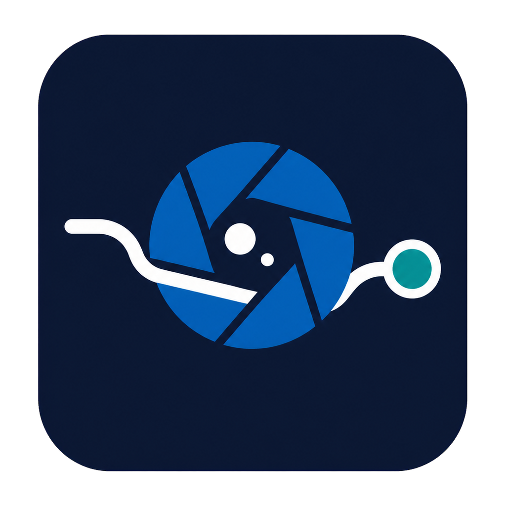
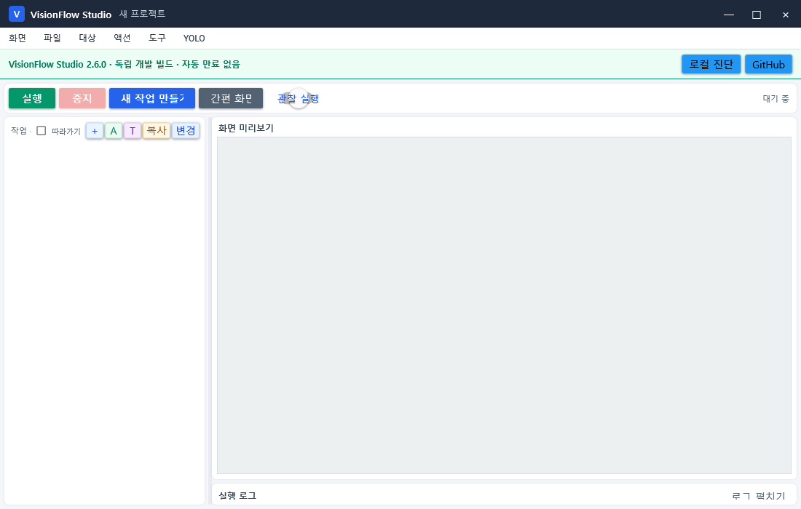

VisionFlow Studio 2.6.0 · OpenCV 5
새 설치와 새 프로젝트의 기본 제품. Compact UI, 목적 기반 작업 생성과 확장된 추적·인식 기능을 제공합니다.
정책 확인 중

VisionFlow DistributionVisionFlow Studio는 화면과 카메라에서 이미지·문자·객체·품질 상태를 찾고, 안전한 입력과 분기로 연결하는 최신 Windows 비전 자동화 제품입니다. YoloMacro는 기존 프로젝트를 위한 레거시 배포로 계속 제공합니다.
기본 작업은 Compact 창에서 빠르게 만들고 보조 기능은 체크한 항목만 오버레이로 설정합니다. Esc로 닫고 Enter로 적용할 수 있어 작은 창에서도 빠르게 편집합니다.
이미지를 캡처하면 OpenCV 찾기와 좌클릭 기본값으로 바로 등록합니다.
OpenCV, YOLO, AOI, OCR과 대표 이미지 사전을 기능별로 선택합니다.
다중 패턴, 회전, 크기, 밝기와 짧은 가림을 같은 대상으로 연결합니다.
마우스·키보드·반복·누름 유지·상대 좌표와 조건 분기를 구성합니다.
실제 입력 없이 탐지·분기·추적 결과를 확인하고 권한과 경로를 검사합니다.
Ctrl+K로 원하는 기능을 검색하고 정확한 설정 화면으로 이동합니다.
최신 제품과 레거시 제품을 같은 이름으로 섞지 않습니다. 패키지와 정책은 제품 ID, 채널과 CoreLib 해시로 구분합니다.
정책은 자동 만료되지 않습니다. 변경이 없으면 계속 사용하고, 관리자가 채널을 회전하거나 제품을 중지할 때만 기존 빌드를 잠급니다.
GitHub Actions에서 publish, rotate, enable, disable을 선택합니다.
서명 Secret은 Distribution 한 곳에만 보관합니다.
서로 다른 제품 ID·채널·DLL 해시를 ECDSA로 서명합니다.
서명 정책을 ZIP에 포함해 최초 오프라인 실행도 검증합니다.
